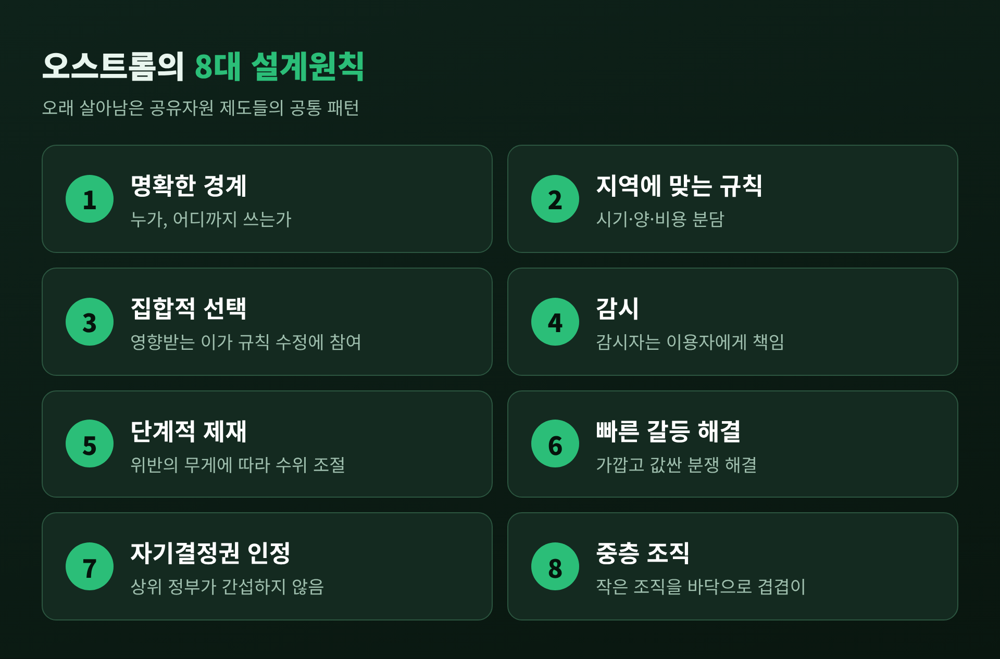
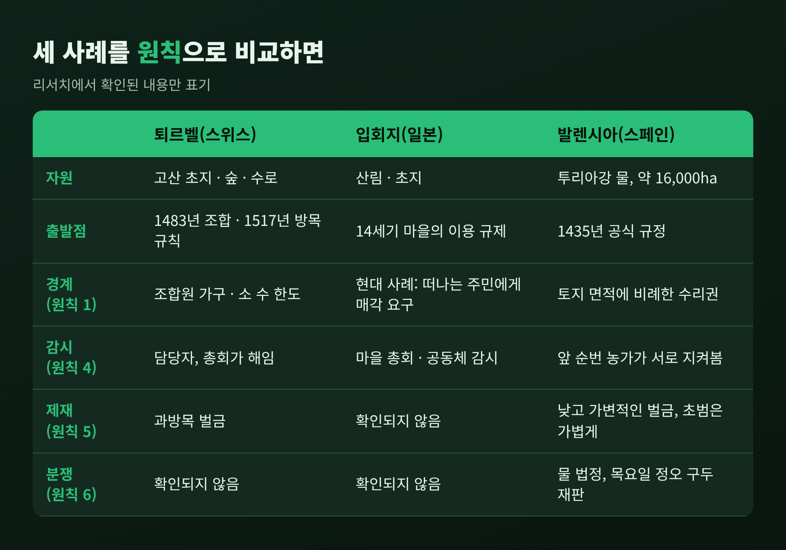
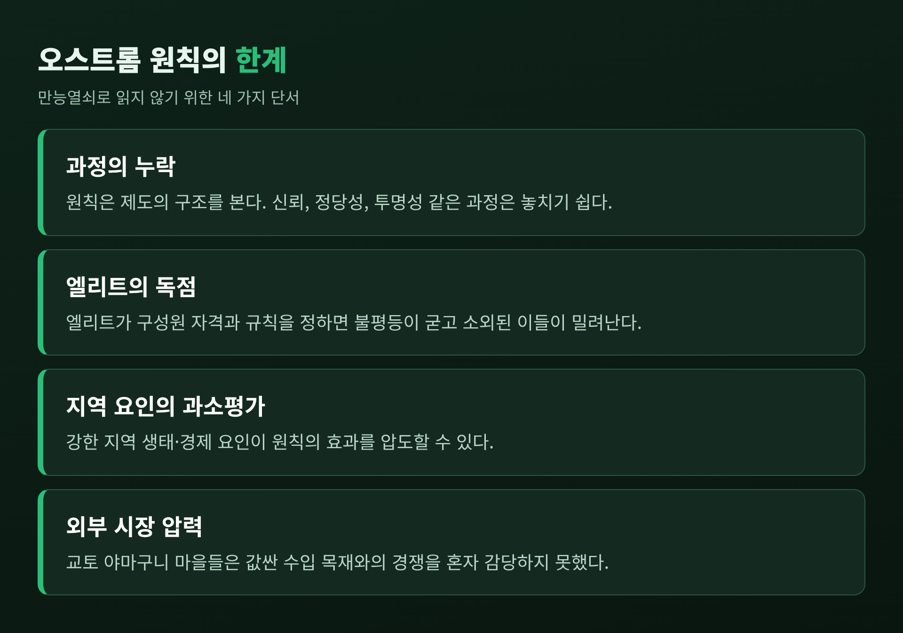

오늘은 엘리너 오스트롬이 찾아낸 공유자원 관리의 8대 설계원칙을 정리해 보려 합니다.
'공유지의 비극'을 다시 설명하지는 않겠습니다. 이 글의 관심은 그 비극을 수백 년간 피해 온 마을들이 어떤 제도를 갖고 있었는지입니다.
스위스 퇴르벨, 일본 입회지, 스페인 발렌시아의 사례를 차례로 살펴보겠습니다.
세 줄 요약
오스트롬은 사유화와 국가 통제 사이에서 '이용자 스스로 만든 규칙'이라는 제3의 길을 실증했습니다.
성공한 공유자원 제도에는 경계, 감시, 단계적 제재 같은 공통된 설계원칙 8가지가 있었습니다.
다만 이 원칙은 만능열쇠가 아니며, 불평등과 환경 변화 앞에서 한계도 분명합니다.
1968년 생태학자 개럿 하딘은 《Science》에 '공유지의 비극'을 발표했습니다.
"공유지의 자유는 모두에게 파멸을 가져온다"는 문장이 널리 알려졌습니다.
처방은 둘로 모였습니다. 사유화하거나, 국가가 직접 관리하거나.
엘리너 오스트롬은 현장에서 다른 답을 찾았습니다.
그는 1990년 『Governing the Commons』에서 스위스의 산악 마을, 일본의 공유림, 스페인의 관개 체계 같은 사례를 분석했습니다.
2009년에는 이 연구로 노벨 경제학상을 받았습니다. 올리버 윌리엄슨과 공동 수상이었고, 수상 이유는 "경제적 거버넌스, 특히 공유재에 대한 분석"이었습니다.
노벨위원회는 공유재산이 잘 관리되지 못한다는 통념에 그가 도전했다고 평가했습니다.
오스트롬과 반 라어호번은 하딘의 분석이 공유재산 체계의 성격을 오해한 데서 출발했다고 지적했습니다.
비극은 하딘의 주장만큼 보편적이지도, 풀기 어렵지도 않다는 것입니다.
지역 주민이 스스로 해법을 만든 경우가 많았기 때문입니다.
오스트롬이 오래 살아남은 공유자원 제도에서 추려 낸 공통점은 여덟 가지입니다.
명확한 경계: 누가 쓸 수 있는지, 자원의 범위가 어디까지인지 분명합니다.
지역 조건에 맞는 규칙: 사용 시기, 장소, 양의 제한이 현지 사정과 비용 분담에 맞춰져 있습니다.
집합적 선택 장치: 규칙의 영향을 받는 사람 대부분이 규칙 수정에 참여합니다.
감시: 감시자는 이용자에게 책임을 지거나 이용자 자신입니다.
단계적 제재: 위반의 무게와 상황에 따라 제재 수위를 달리합니다.
값싸고 빠른 갈등 해결: 가까운 곳에서 쉽게 분쟁을 풀 수 있습니다.
자기결정권의 인정: 상위 정부가 공동체의 제도 설계 권리를 부정하지 않습니다.
중층 조직: 큰 자원은 작은 지역 조직을 바닥으로 여러 층위가 겹쳐 관리합니다.

한 가지 짚어 둘 점이 있습니다.
이 원칙을 옮긴 일본어 초역의 역자는 이것이 필요조건이 아니라 추정 단계의 원칙이라고 주석을 달았습니다.
오스트롬의 여덟 가지는 '이렇게 하면 반드시 성공한다'는 공식이 아니라, 오래 버틴 제도들의 공통 패턴이라고 이해하시는 편이 정확합니다.
스위스 발레주의 퇴르벨은 해발 1,497m에 자리한 산골 마을입니다.
인구는 481명, 주민의 80% 이상이 이곳에서 태어났습니다.
인류학자 로버트 네팅이 1970~71년에 방문해 연구했고, 오스트롬이 이를 토대로 삼았습니다.
오스트롬이 인용한 기록에 따르면, 마을은 1483년 2월 1일 공유지를 규율하는 조합을 세웠고 방목 규칙은 1517년에 정해졌습니다.
지금도 시행되는 규칙입니다.
핵심 문장은 짧습니다. "누구도 겨울에 먹일 수 있는 수보다 많은 소를 알프스 방목장에 보낼 수 없다."
이 한 줄이 원칙 2를 보여 줍니다.
고산 초지는 1년에 열 주 남짓만 쓸모가 있었습니다. 풀이 아니라 겨울 사료가 진짜 병목이었고, 규칙은 그 병목에 맞춰 설계되었습니다.
원칙 4와 5도 작동합니다.
소는 한꺼번에 올려 즉시 마릿수를 셉니다. 가구별 치즈 몫이 소 수에 비례하기 때문에 누구나 서로의 마릿수를 지켜볼 이유가 있습니다.
과방목에는 지역 담당자가 벌금을 부과하는데, 이 담당자는 소 소유자 조합의 연례 총회에서 뽑히고 총회가 해임할 수도 있습니다.
감시자가 이용자에게 책임을 지는 구조입니다.
비용도 이용 규모에 맞춰 나눕니다.
소 수에 비례한 연회비로 도로와 길을 관리하고, 눈사태로 무너진 우리와 오두막을 다시 짓습니다.
숲은 산림관이 해마다 벌채할 나무를 표시하고, 자격 있는 가구가 작업조를 꾸려 베고 쌓은 뒤 장작 더미를 추첨으로 나눕니다.
아쉬운 점도 있습니다.
겨울에 자기 사료로 키운 소만 올릴 수 있다는 겨울사료 규칙은 투기적 대농과 소 상인을 막으려는 원칙이었습니다.
그러나 희소성이 커지면서 점차 대규모 축산 가구에 유리해졌다고 합니다. 가난한 이는 빌린 소를 올리는 예외로 숨통을 텄습니다.
좋은 규칙도 시간이 지나면 누구에게 유리한지가 달라진다는 사실을 보여 주는 대목입니다.
일본의 입회지(入会地)는 마을이 함께 쓰는 산림과 초지입니다.
오스트롬은 3장에서 히라노, 나가이케, 야마노카 마을을 다루었습니다. 다만 이 마을들의 면적과 가구 수 같은 세부 수치는 제가 확인하지 못했습니다.
기원은 14세기로 거슬러 올라갑니다.
일본 중부의 마을들은 인구가 늘고 경지가 넓어지면서 미경작지가 귀해지자, 사용을 규제하기 시작했습니다.
마을이 집합적으로 자기 절제에 합의한 것입니다. 그리고 많은 마을이 제2차 세계대전 이후까지 공유지를 유지했습니다.
이 제도는 지금도 변주되고 있습니다.
일본에는 1960년 기준 약 160만 헥타르의 입회 임야와 초지가 있었는데, 1966년 입회임야 근대화법 이후 그중 30~40%가 협동조합이나 개인 소유 같은 근대적 형태로 바뀌었습니다.
최근 사례는 원칙 1을 떠올리게 합니다.
한 지역에서는 법적으로 쪼개진 산림을 거주민 조합이 하나의 단위로 관리해 멧돼지와 사슴 피해를 줄입니다.
또 다른 곳에서는 마을을 떠나는 주민이 숲을 남은 주민에게 팔도록 요구해 수원을 지킵니다. 구성원의 경계를 지키려는 장치입니다.
원칙 8의 한계도 드러납니다.
교토 야마구니 지구 11개 마을 연구는, 마을이 신규 유입 주민 같은 압력에는 제도를 고쳐 가며 적응했지만 값싼 수입 목재와의 경쟁은 혼자 감당하지 못했다고 보고합니다.
마을 위의 층위가 함께 움직여야 한다는 결론입니다.
스페인 발렌시아의 우에르타(huerta)는 투리아강의 물을 8개 수로로 나눠 약 16,000헥타르의 농지에 대는 체계입니다.
규칙은 1238년의 재정복 이전부터 있었고, 공식 규정은 1435년에 만들어졌습니다.
물은 땅의 면적에 비례해 배분됩니다.
물이 풍부할 때는 필요한 만큼 쓰면 됩니다.
평소의 갈수기에는 순번제(turno)로 돌아가며, 극심한 가뭄에는 취수량을 줄이고 가장 급한 작물에 우선권을 줍니다.
농민은 앞 순번 이웃이 물을 대는 모습을 직접 볼 수 있어서, 감시가 자연스럽게 이뤄집니다.
단계적 제재의 모범도 여기 있습니다.
집행은 철저하지만 벌금은 낮고 가변적입니다. 위반의 정도, 경제 사정, 위반자의 지불 능력에 따라 달라지고 초범은 재범보다 가볍습니다.
오스트롬이 정리한 바로는 위반의 약 3분의 2가 한 번으로 끝났습니다.
분쟁은 물 법정(Tribunal de las Aguas)이 맡습니다.
매주 목요일 낮 12시, 발렌시아 대성당 사도의 문 앞에서 열리는 구두 재판입니다. 선출된 농민 8명이 2년마다 뽑혀 둥글게 앉고, 판결은 항소할 수 없습니다.
사건 당사자의 지역 시딕은 빠지고 다른 시딕이 판단합니다. 값싸고 빠른 갈등 해결, 곧 원칙 6의 전형입니다.
이 법정은 2009년 유네스코 인류무형문화유산에 올랐습니다.

다만 이 사례에는 반론이 있습니다.
케임브리지 학술지에 실린 한 논문은 발렌시아 관개공동체가 농민 자치로 변함없이 이어졌다는 통념이 중세와 근세 사료와 맞지 않는다고 주장합니다. 제도적 연속성의 사례로 쓸 수 없다는 것입니다.
오스트롬이 이슬람 시대 이후 운영이 거의 바뀌지 않았다고 가정했다는 점도 지적합니다.
수백 년을 이어 온 '전통'이라는 말은 조금 덜어내고 읽는 편이 안전합니다.
오스트롬의 여덟 가지를 현장에 그대로 적용하려는 시도에는 비판이 따릅니다.
2010년 『Ecology and Society』에 실린 코엑스 등의 검토를 정리한 자료에는 네 가지 비판이 나옵니다.
원칙이 제도의 구조에 집중해, 신뢰와 정당성, 투명성 같은 과정을 놓칩니다.
원래 맥락 밖에서는 복잡한 문제의 처방전처럼 오용될 수 있습니다.
강한 지역 생태나 경제 요인의 영향을 과소평가할 수 있습니다.
원칙을 만든 시스템과 다른 유형에 적용되는 일이 많습니다.
벌금 설계에도 주의가 필요합니다.
어린이집 지각 벌금을 다룬 연구에서는 지각 벌금을 매기자 오히려 지각이 늘었습니다. 부모들이 지각을 도덕적 잘못이 아니라 돈으로 해결하는 요금으로 받아들였기 때문입니다.
제재의 수위만큼 그것이 주는 메시지가 중요하다는 뜻입니다.
비나 아가르왈은 또 다른 위험을 짚었습니다.
엘리트가 구성원 자격을 정하고 규칙을 자기에게 맞게 만들면, 규칙이 불평등을 굳히고 소외된 이들을 몰아낼 수 있다는 것입니다. 퇴르벨의 겨울사료 규칙이 걸어온 길과 닮은 대목입니다.

끝으로 한 마디만 더 드리겠습니다.
예전에는 공유자원 문제의 답이 시장 아니면 국가라고 여겨졌습니다. 오스트롬 이후에는 질문이 달라졌습니다. 어떤 규칙을 누가 만들고 누가 지켜보는가를 묻게 된 것입니다.
퇴르벨의 소 한 마리, 발렌시아의 물 한 순번에는 같은 구조가 있었습니다. 경계를 긋고, 서로 지켜보고, 위반에는 점차 무겁게, 다툼은 가까운 곳에서 푸는 구조입니다.
그렇다면 우리 동네의 공유자원, 이를테면 아파트 주차 공간이나 공용 텃밭에는 어떤 원칙이 비어 있을까요.
이 여덟 가지를 하나씩 대어 보시길 권합니다. 가장 약한 고리가 보일 것입니다.